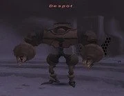
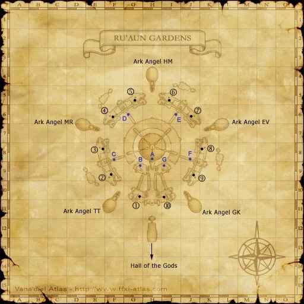

Level 75 reference · Zenith rules
|
Job: Notorious Monster |
 Image source |


|
Zone |
Level |
Drops |
Steal |
Spawns |
Notes | ||||||
|
80-82 |
1 |
A, S, M | |||||||||
|
HP = Detects Low HP; M = Detects Magic; Sc = Follows by Scent; T(S) = True-sight; T(H) = True-hearing JA = Detects job abilities; WS = Detects weaponskills; Z(D) = Asleep in Daytime; Z(N) = Asleep at Nighttime | |||||||||||


Image source
Notes:
- Lottery Spawn from the aggressive Groundskeepers who are on the blue lights around H-9 to H-10. Seems to be a 2~4 hour + lotto pop.
- Has been known to take 8 hours+ to pop.
- The person that defeats the placeholder of Despot will automatically claim it (5 sec after placeholder is killed, Despot will fade in claimed to the person that landed the killing blow).
- Upon dealing the killing blow Despot will pop next to the person that landed the killing blow.
- Drops around 9000 gil
- Special Attacks: Uses only the standard Doll special Panzerfaust. Does not have instant tp as before the update. Instead when he reaches 100% tp, he will use Panzerfaust 3-6 times in a row very fast (not even finishing the animation before doing it again), which will usually kill any non-pld job at full hp.
- Soloable by a Level 74 Beastmaster.
- Soloable by a Level 75 Red Mage. /NIN is not necessarily needed.
- Around 13,500HP
Adapted from Eden Wiki: Despot · Contributors and history · CC BY-SA 4.0. Revision 1906. Layout, links and optional background text adapted for Zenith.